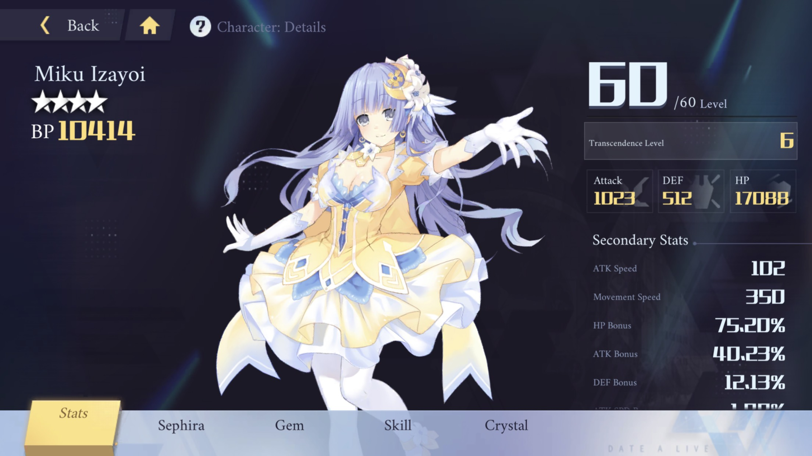
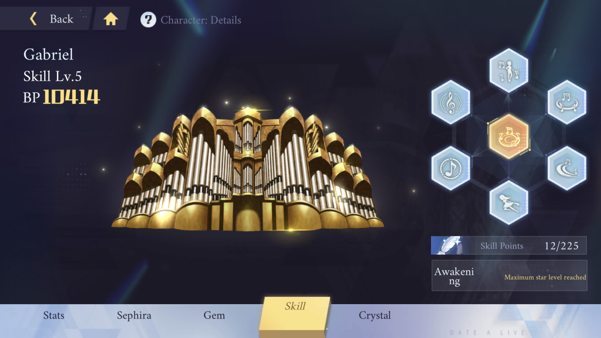
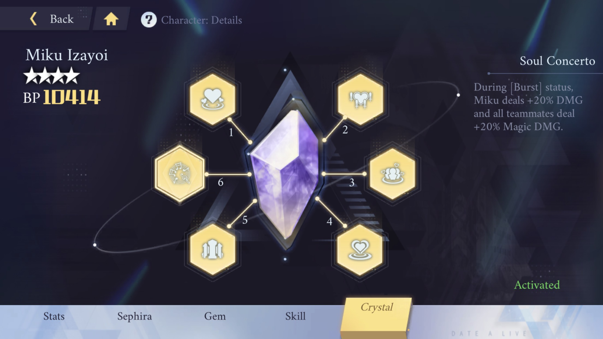
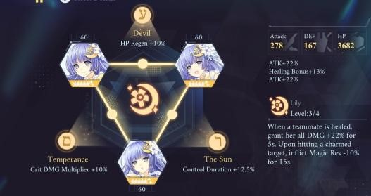
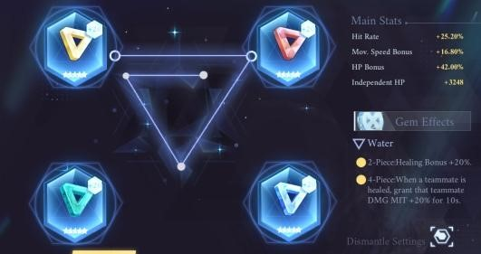

Miku
Contributor: Ngọc Đức
1. Tổng quan (Overview)

o Hệ nguyên tố: Magic - Phép thuật
o Năng lượng:
Khởi đầu: 0
Max: 8
o Gabriel : Miku chơi bàn phím của mình, thực hiện tối đa 3 đòn tấn công, gây sát thương tâm linh tương ứng 30% / 60% / 90%
o Nội tại:
- Khôi phục: Miku nhận được 1 Note Energy sau khi sử dụng một kỹ năng
- Sử dụng kỹ năng nhận được 1 Lưu ý Năng lượng . Khi nó đầy, sử dụng bất kỳ kỹ năng nào cũng tiêu tốn tất cả Năng lượng Giai điệu và kích hoạt trạng thái Burst , trong đó các kỹ năng của Miku gây thêm 30% sát thương
2. Thông tin kĩ năng
Thiên sứ: «Gabriel» (破軍歌姫 - Phá Quân Ca Công)

+ 50% Cơ hội hồi máu cho tất cả các đồng minh bằng 15% ATK của Miku mỗi lần đánh
+ 5% Cơ hội dụ kẻ địch trúng đòn. Bùa lợi ở Lớp 3. Tất cả Đồng minh tăng 7,5% Atk & Def cho mỗi kẻ địch bị mê hoặc
His basic attacks:
+ 20% Cơ hội nhận + 15% DEF trong 6 giây khi trúng đòn
Skill 1: Support:
+Khi Kỹ năng 1 phát nổ VÀ đánh trúng đồng đội, tăng 10% Tốc độ và Tốc độ di chuyển của họ trong 3 giây
Skill 1: Debuff:
+Giảm Atk mục tiêu đi 15% trong 3 giây
Skill 1: Herself:
+Tăng 8% tốc độ di chuyển của Miku khi trúng đòn
Skill 2: Support:
+ Khi nó bắn trúng đồng minh, tăng thiệt hại kỹ năng của họ lên 10% trong 3 giây
Skill 2: Debuff:
+ 20% Cơ hội giảm 15% Anti Crit của kẻ thù trong 5 giây khi trúng đòn
Skill 3: Debuff:
+ Giảm tỷ lệ target của mục tiêu đi 10% trong 3 giây khi trúng đòn
Skill 3: Herself:
+ Notes Có 20% Cơ hội làm choáng khi trúng đòn trong 0,5 giây
+ 15% để nhận thêm 1 Notes mỗi lần sử dụng
Burst Support:
+ Trong trạng thái Burst, Kỹ năng của Miku giảm 10%
+ Trong trạng thái Burst, tất cả đồng đội được tăng 15% sát thương trong 10 giây
Lưu ý: Sử dụng kỹ năng cho 1 Note Năng lượng cần 10 để kích hoạt
Awakening Skill Support:
+ Hồi máu cho tất cả đồng minh bằng 600% Miku's Atk
+ Gabriel ở trên sân trong 10 giây, hồi máu tất cả các tinh linh bằng 60% Miku's Atk mỗi 2 giây
+ (C5) Giảm 10% thời gian hồi chiêu của tất cả các kỹ năng
+ (Với Bộ đá quý Bảo Bình 4 mảnh: Tăng 20% Atk của tất cả các đồng minh trong 10 giây.)
3. Crystal

+ 20% Cơ hội gây ra 1 lớp Lure khi trúng đòn. Lure trong 10 giây. Bùa các mục tiêu trên lớp Lure thứ 3 trong 5 giây. Sự điều khiển không có tác dụng đối với Boss.
C2: Battle Diva
+ Mỗi đơn vị bị điều khiển cung cấp cho Miku và Tất cả Đồng đội 7,5% Atk và 7,5% Def. (Tối đa 15% mỗi)
C3: Charm Armor
+ Có thể Bùa chú thêm 1 kẻ địch cùng lúc. (Tối đa 22,5% mỗi lần) Kéo dài thời gian điều khiển thêm 5 giây
C4: Until Death
+Các đơn vị điều khiển tiêu thụ 50% thiệt hại mà Miku nhận được
C5: Allied Support
+Trong thời gian hồi máu của Kỹ năng Thức tỉnh - Giảm 10% thời gian hồi chiêu của tất cả các kỹ năng & Tăng 10% Hiệu ứng hồi máu
C6: Soul Concerto
+ Trong trạng thái [Burst], Tăng 20% sát thương cho Miku và tăng 20% sát thương phép cho tất cả đồng minh.
4. Sephira: LiLy

Soul Diva: ATK +22% (5*++) ATK +25% (6*)
Charming Idol: ATK +22% (5*++) ATK +25% (6*)
Intimate Lover: Healing Bonus +13% (5*++) Healing Bonus +15% (6*)
Hiệu ứng toàn bộ:
o Bất cứ khi nào đồng đội được hồi máu, tăng 14% / 18% / 22% / 26% cho tất cả sát thương của đồng đội đó trong 5 giây.
o Khi đánh trúng mục tiêu bị điều khiển hoặc giảm 10% Kháng phép trong 15 giây (Không có tác dụng với Boss)
o DMG Up được cung cấp bởi khả năng hồi phục phụ thuộc vào Sephira Star Up ex. Bộ 3x không nâng cấp sẽ cung cấp 14% Dmg Up, 3x 5 ++ sẽ cung cấp 22% Dmg Up)
Cách lấy bộ sephira
o Command Sephira Banner - Bộ của cô ấy không có tính năng 5 * Sephira. Tỷ lệ: 0,0333%. 5 * Sephira được đảm bảo sau 30 lần rút thăm và bạn phải nhận thất bại 50/50.
o Cửa hàng Sephira Pity - Mỗi Sephira của cô ấy đều có thể mua được trong cửa hàng Destiny of Time với giá 85 Time Mark mỗi chiếc. Bạn nhận được Dấu thời gian cho mỗi Sephira 4 * và 5 * bạn kéo.
5. Runestones

o Golden Gem:
- Chỉ số chính:
+ Independent ATK
- Chỉ số phụ:
+ Ưu tiên: ATK% > ATK Speed Bonus > Hit Rate > Crit Rate > Crit Damage
o Red Gem:
- Chỉ số chính:
+ ATK Bonus %
- Chỉ số phụ:
+ Ưu tiên: Independent ATK > ATK Speed Bonus > Hit Rate > Crit Rate > Crit Damage
o Green Gem:
- Chỉ số chính:
+ ATK Bonus %
- Chỉ số phụ:
+ Ưu tiên: Independent ATK > ATK Speed Bonus > Hit Rate > Crit Rate > Crit Damage
o Blue Gem:
- Chỉ số chính:
+ ATK Bonus %
- Chỉ số phụ:
+ Ưu tiên: Independent ATK > ATK Speed Bonus > Hit Rate > Crit Rate > Crit Damage
Water Gem Set Effects:
+ 2 mảnh - Tăng 20% khả năng hồi máu
+ 4 mảnh - Tăng 20% sát thương của tất cả đồng đội bất cứ khi nào đồng đội được hồi máu
Đánh giá và lối chơi
-Điều khá quan trọng là tối đa hóa giá trị ATK của Miku để khả năng hồi phục của cô ấy sẽ tăng lên-Các đòn đánh cơ bản của Miku có 50% hồi máu cho tất cả các nhân vật trong đội với 15% ATK của Miku khi trúng đòn
-Trong Kỹ năng Thức tỉnh, cô ấy hồi máu tất cả các tinh linh bằng 600% Atk của cô ấy ngay lập tức và bằng 60% Atk của Miku mỗi 2 giây trong 10 giây
-Khi cô ấy lên cấp, Miku nhận được các giá trị Crit nhưng chúng không ảnh hưởng đến khả năng hồi phục của cô ấy, đây là lý do tại sao việc tập trung vào crit là không quan trọng, trừ khi bạn muốn Miku gây ra một số sát thương cao hơn
-Tốc độ tấn công để cô ấy có thể thi triển kỹ năng và tấn công nhanh hơn, dẫn đến hồi máu nhanh hơn. Nên nâng thêm tốc đánh cho Miku
~ Contributor: Ngọc Đức ~